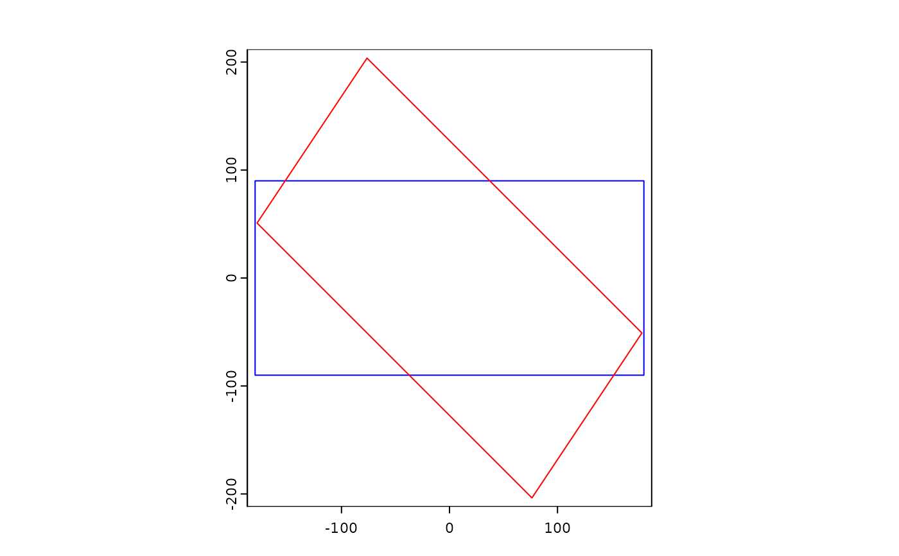
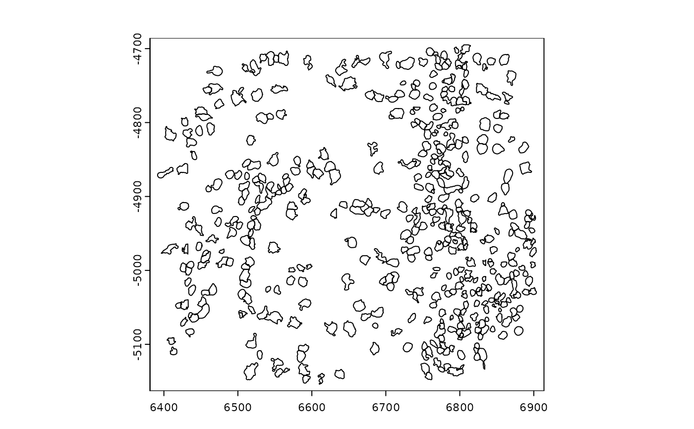
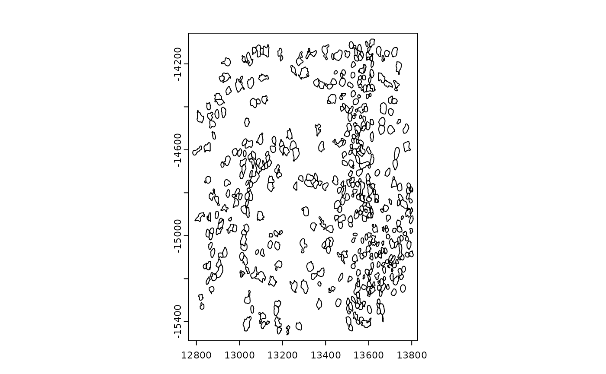
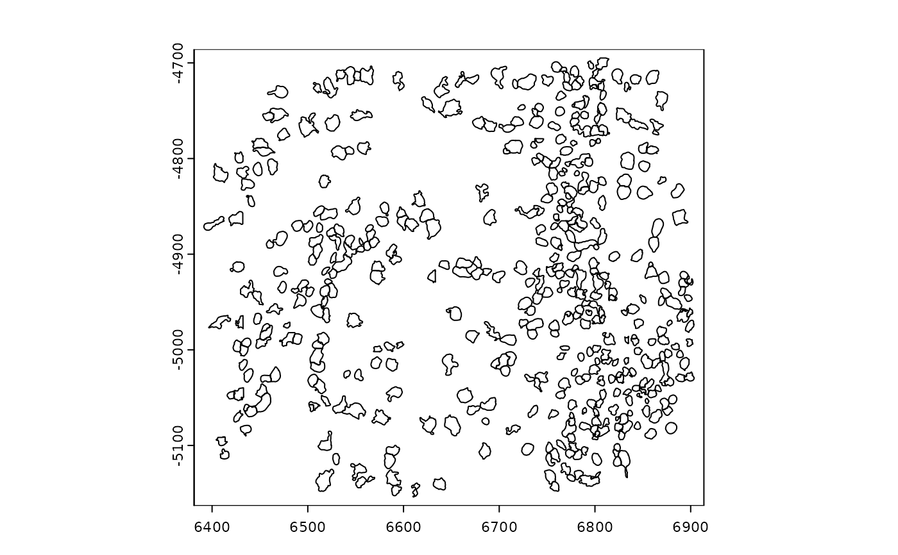
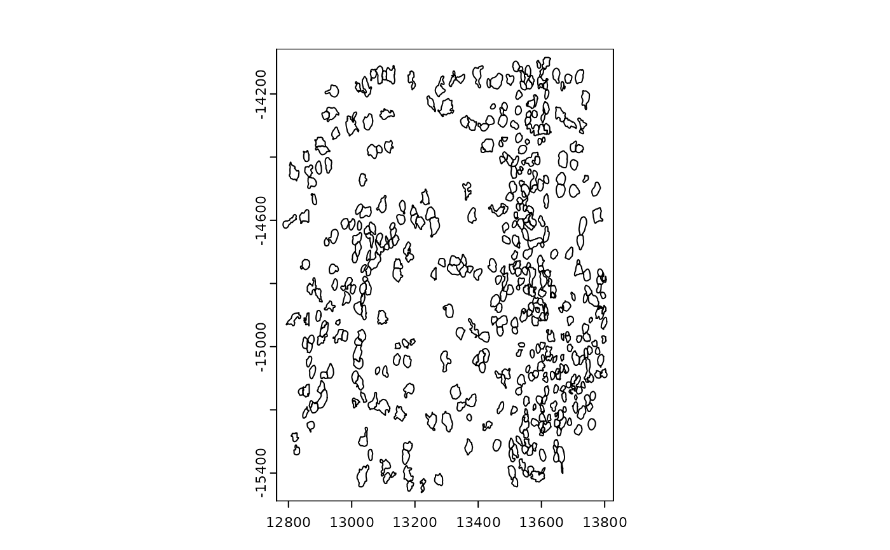

Apply an affine transformation matrix to a spatial object. Currently only works for 2D transforms.
Usage
# S4 method for class 'giotto,matrix'
affine(
x,
y,
inv = FALSE,
spat_unit = ":all:",
feat_type = ":all:",
images = ":all:",
...
)
# S4 method for class 'missing,missing'
affine(x)
# S4 method for class 'ANY,missing'
affine(x)
# S4 method for class 'ANY,affine2d'
affine(x, y, ...)
# S4 method for class 'SpatVector,matrix'
affine(x, y, inv = FALSE, ...)
# S4 method for class 'giottoPoints,matrix'
affine(x, y, inv = FALSE, ...)
# S4 method for class 'giottoPolygon,matrix'
affine(x, y, inv = FALSE, ...)
# S4 method for class 'spatLocsObj,matrix'
affine(x, y, inv = FALSE, ...)
# S4 method for class 'giottoLargeImage,matrix'
affine(x, y, inv = FALSE, ...)
# S4 method for class 'giottoAffineImage,matrix'
affine(x, y, inv = FALSE, ...)
# S4 method for class 'affine2d,matrix'
affine(x, y, inv = FALSE, ...)Arguments
- x
object to affine transform or a
matrix- y
matrixor coercible tomatrix(such asaffine2d). Should be a matrix with either 2 or 3 columns (linear or affine).- inv
logical. Whether the inverse of the affine transform should be applied.
- spat_unit
character vector. spatial units to affect. The :all: token to affect all can be used.
- feat_type
character vector. feature types to affect. The :all: token to affect all can be used.
- images
character vector. Images to affect. The :all: token to affect all can be used.
- ...
additional args to pass (none implemented)
Examples
m <- diag(rep(1, 3))
trans_m <- matrix(c(1, 0, 0, 0, 1, 0, 200, 300, 1), nrow = 3)
scale_m <- matrix(c(2, 0, 0, 0, 3, 0, 0, 0, 1), nrow = 3)
aff_m <- matrix(c(2, 3, 0, 0.2, 3, 0, 100, 29, 1), nrow = 3)
gpoints <- GiottoData::loadSubObjectMini("giottoPoints")
gpoly <- GiottoData::loadSubObjectMini("giottoPolygon")
sl <- GiottoData::loadSubObjectMini("spatLocsObj")
# creation of affine2d
aff <- affine(m)
aff <- spin(flip(shear(aff, fx = 0.2)), 45)
plot(aff) # blue is start, red is end

# giottoPoints ##############################################
plot(gpoints)
 plot(affine(gpoints, trans_m))
# giottoPolygon #############################################
plot(gpoly)

plot(affine(gpoly, scale_m))

plot(affine(gpoly, aff)) # affine() with `affine2d`
# spatLocsObj ###############################################
plot(affine(sl, m))
plot(affine(gpoints, trans_m))
# giottoPolygon #############################################
plot(gpoly)

plot(affine(gpoly, scale_m))

plot(affine(gpoly, aff)) # affine() with `affine2d`
# spatLocsObj ###############################################
plot(affine(sl, m))
 plot(affine(sl, trans_m))
plot(affine(sl, scale_m))
# this transformation can be inverted
aff_sl <- affine(sl, aff_m)
plot(aff_sl)
plot(affine(aff_sl, aff_m, inv = TRUE))
plot(affine(sl, trans_m))
plot(affine(sl, scale_m))
# this transformation can be inverted
aff_sl <- affine(sl, aff_m)
plot(aff_sl)
plot(affine(aff_sl, aff_m, inv = TRUE))